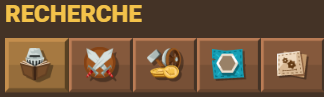
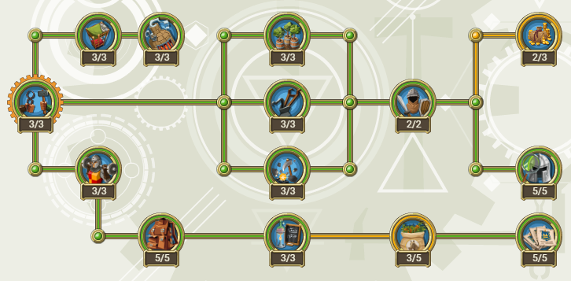
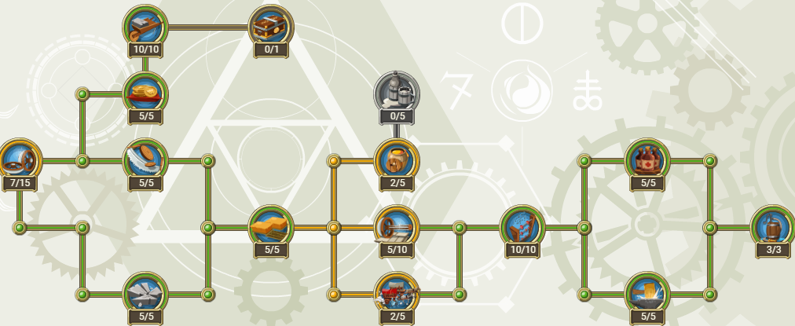
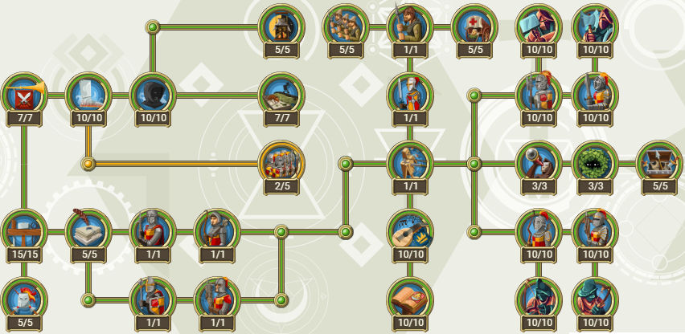
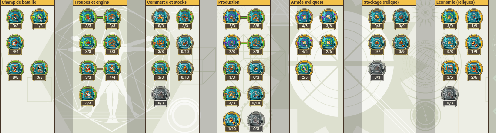
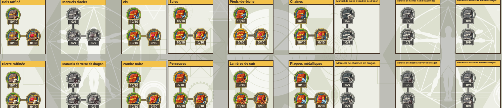

présentation
La tour de recherche est un bâtiment qui comme son nom l'indique, permet de faire des recherches. Plus précisemment, ces recherches sont réparties sur les niveaux de la tour de recherche (6 niveaux).
Chaque augmentation du niveau de la tour de recherche débloque son lot de recherche, et améliore également la vitesse de recherche. Ces recherches sont réparties en cinq fenêtres :

- Technologies fondamentales
- Technologies économiques
- Technologies militaires
- Plans
- Manuels de fabriction
- Technologies fondamentales

- Technologies économiques

- Technologies militaires

- Plans

- Manuels de fabriction

Utilité
Les recherches requièrent du temps et des ressources. Toutes les recherches n'ont pas le même coût : les recherches dans la partie technologies fondamentales coûte 100 à 200 bois/pierres par recherches, alors que rechercher des soldats reliques peut coûter jusqu'à 250 jetons de construction.
Rechercher des plans de construction d'objet peut coûter plusieurs millions de pièces, comme les manuels de fabrication (tour de recherche lvl 5).
Toutes ces recherches permettent d'améliorer des bâtiments/effets et prod donc, en plus de débloquer des objets et des manuels de fabrication. La tour de recherche est un bon moyen d'améliorer ses cp, sans dépenser des ruru.
Recherches
Certaiens recherches ne sont possibles qu'avec des rubis, d'autres sont possibles avec des ressources de base jusqu'à un certain niveau, puis demandent des rubis. Un autre point : une recherche prend toujours du temps, et il est possible de passer ce temps avec des rubis et sablier.
C'est évidemment une bonne façon de gaspiller ses rubis. En revanche, dépenser ses rubis pour certaines recherches comme augmenter la capacité des charettes, par exemple, est plus viable sur le long terme.
Là encore, aavant de dépnser ses rubis, il faut procéder à un arbitrage :
- Est-qu'une recherche m'intéresse en particulier?
- Est-ce que je dépense mes rubis dans une ou des recherches au lieu de les mettre dans un bâtiment ?